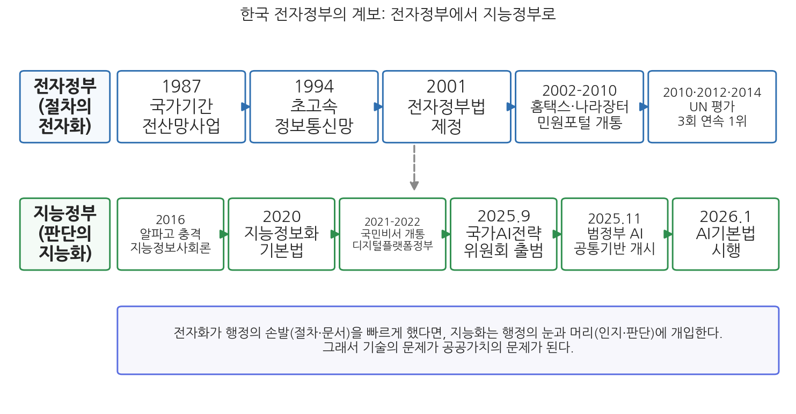
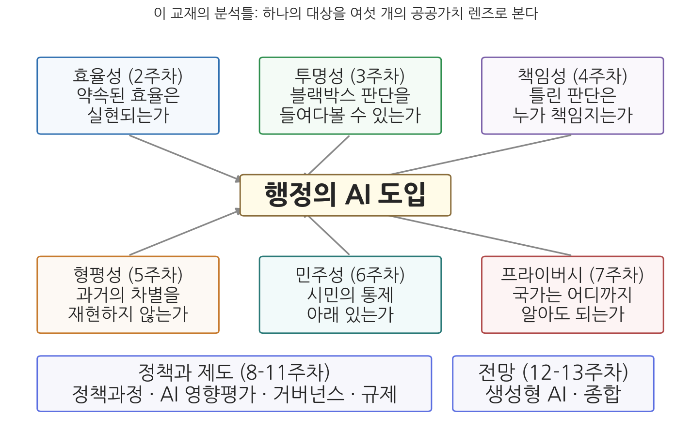

1주차 1차시. 강의의 문: 디지털 전환과 행정
이 강의는 인공지능과 정보통신기술의 급속한 발전이 행정과 정책 분야에 미치는 영향을 이론과 사례, 주요 쟁점을 중심으로 탐구한다. 특히 이러한 기술 혁신이 공공가치에 미치는 영향을 중점적으로 다룬다. (「디지털 시대의 행정」 교과목 개요)
이 장에서 배우는 것
2014년 2월, 서울 송파구의 한 단독주택 지하에서 세 모녀가 숨진 채 발견되었다. 어머니는 식당 일을 하다 다쳐 수입이 끊겼고, 두 딸은 병과 빚에 시달리고 있었다. 방에는 현금 70만 원이 든 봉투와 함께 "주인 아주머니께 죄송합니다. 마지막 집세와 공과금입니다"라는 메모가 남아 있었다. 이들은 국가에 도움을 청한 적이 없었고, 국가는 이들의 위기를 알지 못했다.
이 사건이 우리에게 던진 질문은 무겁다. 건강보험료가 밀리고 있다는 기록, 소득이 끊겼다는 기록은 이미 어딘가의 행정 데이터베이스에 존재했다. 데이터는 있었는데 행정은 왜 몰랐는가. 흩어진 기록을 모아 위기의 신호를 읽어 내는 일은 사람의 눈과 손만으로는 불가능한 규모였기 때문이다. 이듬해 정부는 전기요금 체납, 건강보험료 체납 같은 위기 정보를 연계해 도움이 필요한 가구를 컴퓨터로 찾아내는 시스템을 만들었다. 행정이 인공지능(artificial intelligence, AI)과 데이터 분석을 만나게 된 것은 유행을 좇아서가 아니라, 이런 절박한 실패의 경험 위에서였다.
그러나 만남이 언제나 해피엔딩은 아니다. 뒤에서 보겠지만 다른 나라에서는 복지 알고리즘이 무고한 시민 수만 명을 부정수급자로 몰아 내각이 무너지는 일도 있었다. 기술은 행정을 구하기도 하고 행정을 실패시키기도 한다. 그래서 이 과목은 "AI를 도입해야 하는가"라는 물음 대신 "AI가 행정의 어떤 가치를 어떻게 바꾸는가"를 묻는다. 이 첫 장은 한 학기 여정의 문이다. 구체적으로 다음을 배운다.
- 행정은 왜 AI를 만나게 되었는가: 수요, 기술, 제도의 세 힘
- 한국 전자정부의 계보와 지능정보화로의 전환
- 이 교재의 분석틀: 여섯 개의 공공가치 렌즈 (효율성, 투명성, 책임성, 형평성, 민주성, 프라이버시)
- 교재 전체의 지도와 이 과목의 공부법
이 장은 하나의 질문을 따라 전개된다. "행정은 왜, 어떤 경로로 AI를 만나게 되었고, 그 만남을 우리는 어떤 눈으로 보아야 하는가?"
1.1 행정과 AI의 만남을 실제 사건으로 들여다본다 → 1.2 한국 전자정부 40년의 계보를 따라 "전자정부에서 지능정부로"의 전환을 본다 → 1.3 이 교재의 분석틀인 공공가치의 렌즈를 세운다 → 1.4 한 학기 전체의 지도를 그리고 공부법을 익힌다.
1.1 행정은 왜 AI를 만나게 되었는가
데이터는 있었지만 행정은 몰랐다
송파 세 모녀 사건으로 돌아가 보자. 사건 이후 드러난 사실은 역설적이었다. 세 모녀는 복지 신청을 하지 않았고 당시 기준으로는 신청했더라도 받기 어려운 처지였지만, 이들이 위기에 빠져 있다는 흔적 자체는 행정 어딘가에 남아 있었다. 문제는 그 흔적이 국민건강보험공단, 한국전력, 지방자치단체 등 서로 다른 기관의 전산망에 조각조각 흩어져 있었다는 점이다. 전국의 가구를 상대로 이 조각들을 사람이 일일이 맞춰 보는 것은 불가능하다. 위기는 데이터 속에 있었지만, 데이터를 읽을 눈이 없었다.
2014년 말 국회는 이른바 "송파 세 모녀법"으로 불리는 복지 3법을 정비했고, 이에 근거해 보건복지부는 2015년 12월부터 복지 사각지대 발굴시스템을 운영하기 시작했다. 여러 기관의 위기 신호를 한곳에 모아 분석하고, 위기 가능성이 높은 가구를 추려 지방자치단체 복지 담당자에게 통보하는 시스템이다. 이 시스템의 10년 성적표를 사례로 읽어 보자.
2014년 송파 세 모녀 사건을 계기로 구축되어 2015년 12월부터 운영 중인 시스템이다. 단전·단수, 건강보험료 체납, 금융 연체 같은 위기 정보를 여러 기관에서 모아 분석하고, 위기 가능성이 높은 가구를 예측해 지방자치단체가 확인하도록 통보한다. 연계하는 위기 정보는 출범 당시 18종에서 2025년 47종(21개 기관)으로 늘었고, 발굴 규모는 2015년 약 11만 명에서 2025년 약 137만 명으로, 실제 지원으로 이어진 인원은 같은 기간 약 2만 명에서 약 88만 명으로 증가했다. 발굴된 사람 중 실제 지원을 받은 비율(지원율)도 16.0%에서 63.9%로 높아졌다(보건복지부 2025년 2월 및 2026년 6월 발표). 2026년부터는 위기 정보 입수 주기를 2개월에서 매월로 단축해 더 빨리 찾아내도록 개편하고 있다.
이 사례가 보여 주는 것은 두 가지다. 첫째, 흩어진 데이터를 연계하고 그 속에서 패턴을 찾아 예측하는 일은 컴퓨터 없이는 불가능한 행정이라는 점이다. 137만 명 규모의 위기 후보를 사람의 직관만으로 골라낼 수는 없다. 둘째, 그럼에도 이 시스템의 마지막 단계는 여전히 사람이라는 점이다. 시스템이 추려 낸 명단을 들고 실제 가구의 문을 두드려 사정을 확인하고 지원을 연결하는 것은 일선 공무원이다. 지원율이 63.9%라는 숫자를 뒤집으면, 시스템이 위기라고 예측한 사람의 3분의 1 이상은 확인 결과 지원 대상이 아니었다는 뜻이기도 하다. 예측은 틀릴 수 있고, 그래서 기계의 예측과 인간의 확인이 짝을 이룬다. AI가 행정에 들어온다는 것은 공무원이 기계로 대체된다는 뜻이라기보다, 기계가 추리고 사람이 판단하는 새로운 분업이 만들어진다는 뜻에 가깝다. 이 분업 관계는 4주차(책임성)와 8주차(정책과정)에서 다시 중요한 쟁점이 된다.
만남을 밀어붙인 세 가지 힘
행정과 AI의 만남은 한 사건의 산물이 아니라 더 큰 세 가지 힘이 겹친 결과다.
첫째는 수요의 힘이다. 행정이 다루어야 할 문제가 복잡해지고 개인화되었다. 복지만 해도 급여 종류가 수백 가지로 늘어 "내가 받을 수 있는 것"을 시민 스스로 알기 어렵고, 감염병·재난·경제위기는 실시간 데이터 분석 없이는 대응 시점을 놓친다. 여기에 인구구조 변화가 겹친다. 생산연령인구가 줄어드는 사회에서 행정 수요는 늘어나는데 공무원 수를 계속 늘리는 선택지는 재정적으로도 정치적으로도 좁다. 사람을 늘릴 수 없다면 사람의 일을 돕는 도구를 찾게 된다.
둘째는 기술의 힘이다. 2010년대 딥러닝의 돌파, 2020년대 생성형 AI의 확산으로 기계가 할 수 있는 일의 범위가 급격히 넓어졌다(기술 이야기는 2차시에서 자세히 다룬다). 중요한 것은 이 기술들이 행정이 이미 가진 자원, 곧 방대한 데이터와 잘 맞는다는 점이다. 정부는 한 사회에서 가장 큰 데이터 보유자 중 하나다. 주민등록, 세금, 건강보험, 교통, 기상 데이터가 모두 정부의 손에 있다.
셋째는 제도의 힘이다. 각국 정부는 AI를 국가 경쟁력의 문제로 보고 도입을 제도적으로 밀어붙여 왔다. 한국도 예외가 아니어서, 뒤에 보듯 법률과 전담 기구, 국제 평가가 도입을 가속하는 제도적 압력으로 작동해 왔다. 국제기구의 전자정부 평가 순위가 국내 언론의 머리기사가 되는 나라에서, 정부가 기술 도입에 소극적이기는 어렵다.
열광과 회의 사이
이 세 힘을 보면 공공부문의 AI 활용은 이제 선택이 아니라 주어진 사실에 가깝다. 그러나 "불가피하다"와 "무조건 좋다"는 전혀 다른 명제다. 만남의 다른 얼굴을 보여 주는 사례를 하나 더 읽자.
2023년 11월 17일, 지방자치단체 공무원이 쓰는 새올행정시스템과 온라인 민원 창구인 정부24가 동시에 멈췄다. 전국 주민센터에서 주민등록등본 같은 기본 증명서 발급이 중단되었고, 온라인 민원 처리도 함께 마비되었다. 서비스는 주말을 넘겨 사흘 만에 정상화되었고, 정부 조사 결과 원인은 네트워크 장비의 불량으로 발표되었다. 세계 최고 수준을 자부하던 전자정부가 장비 하나의 고장으로 전국 단위에서 멈출 수 있음을 보여 준 사건으로, 이후 정부는 공공 정보시스템의 등급 관리와 이중화 등 안정성 대책을 내놓았다.
이 사건이 보여 주는 것은 디지털 전환(digital transformation)의 이면이다. 행정이 디지털 기반에 깊이 의존할수록, 그 기반이 흔들릴 때의 충격도 커진다. 종이 대장 시대의 행정은 느렸지만 한꺼번에 멈추지는 않았다. 디지털 행정은 빠르지만 단일 장애점이 전국을 멈춰 세운다. AI로 가는 길도 마찬가지다. 얻는 것과 잃을 수 있는 것을 함께 재는 눈이 필요하다.
"기술이 발전하면 행정은 자연히 좋아진다"거나 반대로 "AI는 필연적으로 감시와 차별을 낳는다"는 식의 사고를 기술 결정론(technological determinism)이라 한다. 두 방향 모두 함정이다. 같은 기술이라도 어떤 법과 제도 아래서, 어떤 조직이, 어떤 목적으로 쓰느냐에 따라 결과는 달라진다. 앞의 두 사례가 좋은 예다. 데이터 연계 기술은 위기 가구를 구하는 데 쓰였고, 같은 시기의 전산 인프라는 관리 실패로 전국 민원을 멈춰 세웠다. 이 과목에서 우리는 기술 자체가 아니라 기술과 제도와 사람의 조합을 분석 대상으로 삼는다.
1.2 전자정부에서 지능정부로
한국 전자정부 40년의 계보
행정과 AI의 만남은 갑작스러운 사건이 아니라 40년 가까이 쌓여 온 정보화의 연장선에 있다. 한국은 이 역사를 보기에 특히 좋은 나라다. 출발은 1987년 시작된 국가기간전산망사업이다. 주민등록, 부동산 같은 국가의 기본 대장을 전산화한 이 사업으로 "정부의 데이터베이스"라는 기반이 처음 만들어졌다. 1990년대에는 초고속정보통신망 구축이 이어졌고, 2001년 전자정부법 제정과 함께 전자정부 구축이 국가적 과제로 공식화되었다. 2000년대에 국세청 홈택스, 조달청 나라장터, 온라인 민원 포털(지금의 정부24) 같은 시스템이 차례로 열리면서, 시민이 관청에 가지 않고 세금을 내고 증명서를 떼는 일상이 자리 잡았다.
이 축적의 성적은 국제적으로도 확인되었다. 한국은 유엔(UN) 전자정부평가에서 2010년, 2012년, 2014년 세 차례 연속 세계 1위를 차지했다. 가장 최근인 2024년 평가에서는 종합 4위(1위 덴마크, 2위 에스토니아, 3위 싱가포르)로 내려앉았지만 온라인 서비스 부문에서는 1위를 지켰다(행정안전부 2024년 9월 발표). 순위의 등락보다 중요한 것은, 한국이 "행정의 전산화"라는 과제를 세계에서 가장 먼저, 가장 깊게 끝낸 나라 중 하나라는 사실이다. 바로 그렇기 때문에 한국 행정의 다음 질문은 자연스럽게 "전산화된 행정으로 무엇을 더 할 것인가"가 되었다.

그림 1-1을 읽는 법은 이렇다. 위쪽 줄은 행정의 절차와 문서를 온라인으로 옮긴 전자정부 시대의 이정표이고, 아래쪽 줄은 데이터와 AI로 행정의 판단을 돕는 지능정부 시대의 이정표다. 이 그림에서 알 수 있는 것은 두 가지다. 첫째, 두 시대는 칼로 자르듯 나뉘지 않고 2010년대 후반부터 겹쳐 진행된다. 둘째, 지능정부 시대의 이정표는 기술(시스템 개통)만이 아니라 법과 기구(기본법, 위원회)로 이루어져 있다. 지능화는 기술 사업이자 제도 사업이다.
정보화에서 지능화로: 무엇이 달라지는가
전자정부(electronic government)는 정보기술을 활용하여 행정기관의 업무를 전자화함으로써 행정기관 상호 간 또는 국민에 대한 행정업무를 효율적으로 수행하는 정부를 말한다(전자정부법 제2조의 정의를 풀어 쓴 것). 핵심은 기존 업무와 절차를 온라인으로 옮기는 것이다.
지능정부(intelligent government) 또는 지능형 정부는 데이터와 AI를 활용해 행정이 문제를 먼저 찾아내고, 서비스를 개인 맞춤형으로 제공하며, 의사결정을 데이터 분석으로 뒷받침하는 정부를 가리키는 개념이다. 핵심은 절차의 전자화를 넘어 행정의 인지와 판단을 기계가 돕는 것이다.
두 개념의 차이를 민원 창구로 비유해 보자. 전자정부는 관청의 창구를 인터넷으로 옮긴 것이다. 시민이 무엇이 필요한지 알고 찾아와 신청하면, 온라인으로 빠르게 처리해 준다. 지능정부는 여기서 한 걸음 나간다. 시민이 찾아오기 전에 "이 시민에게 지금 이 지원이 필요할 것"을 데이터로 추정해 먼저 알려 주고(복지 사각지대 발굴, 국민비서 알림), 신청이 들어오면 과거 수백만 건의 처리 데이터로 학습한 모형이 검토를 돕는다. 요컨대 전자정부가 행정의 손발을 빠르게 했다면, 지능정부는 행정의 눈과 머리에 개입한다.
바로 이 차이가 이 과목이 존재하는 이유다. 절차의 전산화는 주로 속도와 편의의 문제였지만, 판단의 지능화는 다른 종류의 질문을 낳는다. 기계가 위기 가구를 잘못 짚으면 누가 책임지는가. 기계의 추천 논리를 시민이 알 수 없다면 그 행정은 투명한가. 학습 데이터에 새겨진 과거의 차별이 기계의 판단에 되살아나면 어쩌는가. 손발의 문제가 아니라 눈과 머리의 문제가 되는 순간, 기술 문제는 가치 문제가 된다.
한국 제도의 전환도 이 흐름을 따라왔다. 2020년에는 국가정보화기본법이 지능정보화기본법으로 전부개정되어, 법의 무게중심이 "정보화"에서 "지능정보화"로 옮겨 갔다. 2022년 출범한 디지털플랫폼정부위원회는 부처에 흩어진 데이터와 서비스를 하나의 플랫폼으로 통합하는 구상을 추진했고, 정권 교체 후인 2025년 11월 해산되어 그 사업은 행정안전부와 과학기술정보통신부 등으로 승계되었다. 같은 해 9월에는 대통령 직속 국가인공지능전략위원회가 출범해 "AI 3대 강국"을 목표로 내걸었고, 11월에는 공무원이 행정 내부망에서 민간 생성형 AI를 쓸 수 있게 하는 범정부 AI 공통기반 서비스가 시작되었다. 그리고 2026년 1월 22일, 「AI기본법(인공지능 발전과 신뢰 기반 조성 등에 관한 기본법)」이 시행되었다. 2024년 12월 국회를 통과한 이 법으로 한국은 유럽연합(EU)에 이어 세계에서 두 번째로 포괄적인 AI 법제를 갖춘 나라가 되었고, EU가 고위험 AI 규제의 적용을 늦추면서 실제 전면 적용은 한국이 가장 이른 사례가 될 것이라는 평가도 나온다(자세한 내용은 11주차에서 다룬다).
전자정부, 정부3.0, 지능형 정부, 디지털플랫폼정부, 그리고 AI 시대의 정부까지. 한국에서는 정권이 바뀔 때마다 정부 혁신의 이름표가 바뀌어 왔다. 이름표의 교체에는 두 얼굴이 있다. 한편으로 각 이름표는 실제 기술 환경의 변화(인터넷의 보급, 모바일, 데이터, AI)를 반영하며, 새 이름은 관료제를 움직이는 정치적 동력이 되기도 한다. 다른 한편으로 잦은 교체는 앞 정부 사업의 단절과 재포장이라는 비용을 낳는다. 2025년 디지털플랫폼정부위원회가 법적 근거를 상설화하지 못한 채 대통령령의 효력과 함께 해산된 것이 그 예다. 이름표 아래에서 무엇이 연속되고 무엇이 단절되는지 살피는 것은 이 과목이 기르려는 비판적 안목의 일부다.
1.3 공공가치의 렌즈: 이 교재의 관점
좋은 질문은 "도입 찬반"이 아니다
AI와 행정에 관한 논의는 종종 "AI 도입에 찬성하는가, 반대하는가"라는 물음으로 흐른다. 그러나 이것은 좋은 질문이 아니다. 1.1절에서 보았듯 도입 자체는 이미 상당 부분 진행된 사실이고, 찬반의 언어는 열광 아니면 공포라는 양 극단으로 논의를 밀어붙이기 때문이다. 더 생산적인 질문은 이것이다. "이 기술은 행정이 지켜야 할 가치들에 각각 어떤 영향을 미치는가. 어떤 가치를 키우고, 어떤 가치를 위협하며, 가치들끼리 충돌할 때 우리는 무엇을 우선할 것인가."
이 질문을 던지려면 먼저 "행정이 지켜야 할 가치들"의 목록이 필요하다. 행정학은 이를 공공가치라 부른다.
공공가치(public values)는 시민이 마땅히 누려야 할 권리와 혜택, 시민이 사회와 국가에 지는 의무, 그리고 정부와 정책이 기초해야 할 원칙에 관하여 한 사회가 이룬 규범적 합의를 말한다(Bozeman 2007). 쉽게 말해 "정부라면 마땅히 이래야 한다"고 그 사회가 합의한 기준들이다. 효율성, 투명성, 책임성, 형평성 같은 것들이 대표적이며, 무엇이 공공가치인지 그리고 가치들 사이의 우선순위는 시대와 사회에 따라 달라진다.
이 교재는 여섯 개의 공공가치를 렌즈로 삼는다. 효율성, 투명성, 책임성, 형평성, 민주성, 프라이버시다. 하나의 대상(행정의 AI 도입)을 여섯 개의 렌즈로 번갈아 들여다보는 것이 이 과목의 방법이다.

그림 1-2를 읽는 법은 이렇다. 가운데 상자가 우리의 분석 대상인 "행정의 AI 도입"이고, 이를 둘러싼 여섯 상자가 렌즈다. 각 렌즈에는 그 가치의 전통적 물음과 AI가 새로 제기하는 물음이 함께 적혀 있다. 이 그림에서 알 수 있는 것은, 같은 시스템이라도 어느 렌즈로 보느냐에 따라 전혀 다른 평가가 나온다는 점이다. 복지 사각지대 발굴시스템은 효율성의 렌즈로 보면 성공 사례지만, 프라이버시의 렌즈로 보면 47종의 개인정보를 본인 동의 없이 연계하는 시스템이기도 하다.
여섯 렌즈 미리 보기
각 렌즈는 2주차부터 7주차까지 한 주씩 본격적으로 다룬다. 여기서는 각 가치의 전통적 의미와 AI가 던지는 새 질문만 짧게 미리 본다.
효율성(efficiency, 2주차)은 가장 오래된 행정가치다. 같은 자원으로 더 많은 성과를, 같은 성과를 더 적은 자원으로. AI 도입의 공식 명분은 거의 언제나 효율이다. 새 질문은 이것이다. 약속된 효율은 실제로 실현되는가, 그리고 효율의 이득은 누구에게 돌아가는가.
투명성(transparency, 3주차)은 행정의 결정 과정과 근거를 시민이 들여다볼 수 있어야 한다는 가치다. 그런데 딥러닝 모형은 만든 사람조차 개별 판단의 이유를 설명하기 어려운 "블랙박스"가 될 수 있다. 서류로 남던 결정의 근거가 수억 개의 매개변수 속으로 사라질 때, 행정의 투명성은 어떻게 지키는가.
책임성(accountability, 4주차)은 행정의 결정에 대해 누군가가 설명하고 잘못을 바로잡을 의무를 진다는 가치다. 기계의 예측을 참고한 결정이 잘못되었을 때 책임은 공무원, 개발자, 기관장, 알고리즘 중 누구에게 있는가. 책임이 모두에게 조금씩 있다는 말은 아무에게도 없다는 말과 얼마나 다른가.
형평성(equity, 5주차)은 행정이 시민을 부당하게 차별하지 않고, 필요가 다른 시민을 다르게 배려해야 한다는 가치다. AI는 과거 데이터로 학습한다. 과거에 차별이 있었다면 데이터에도 차별이 새겨져 있고, 기계는 그것을 성실하게 재현하거나 증폭할 수 있다.
민주성(democracy, 6주차)은 행정이 시민의 의사에 기초하고 시민의 참여에 열려 있어야 한다는 가치다. 알고리즘이 여론이 형성되는 공간을 장악하고, 허위정보가 선거를 흔들고, 소수 기업이 핵심 기술을 독점할 때 민주주의의 조건은 어떻게 되는가.
프라이버시(privacy, 7주차)는 개인의 삶이 부당하게 수집되고 감시되지 않아야 한다는 가치다. AI는 데이터를 먹고 자란다. 더 나은 예측과 맞춤 서비스의 대가로 국가가 더 많이 아는 것을 우리는 어디까지 허용할 것인가.
여섯 렌즈는 서로 독립적이지 않다. 효율을 위해 데이터를 모으면 프라이버시와 긴장하고, 투명성을 위해 알고리즘을 공개하면 악용의 우려가 생기며, 형평을 위한 보정은 효율과 충돌할 수 있다. 이 과목의 후반부(8-11주차)는 이런 긴장을 조정하는 정책과 제도(정책과정, 영향평가, 거버넌스, 규제)를 다루고, 13주차에서 여섯 렌즈를 다시 한 표 위에 모은다.
1.4 교재 지도와 공부법
한 학기의 지도
이 교재는 4부, 13개 주, 26개 장으로 구성된다.
표 1-1. 한 학기의 구성
| 부 | 주차 | 다루는 내용 | 중심 질문 |
|---|---|---|---|
| 1부. AI와 공공부문 | 1주 | 디지털 전환과 행정, AI의 개념과 공공부문의 활용 | 행정은 왜, 어떤 기술과 만나고 있는가 |
| 2부. AI와 공공가치 | 2-7주 | 효율성, 투명성, 책임성, 형평성, 민주성, 프라이버시 | AI는 행정의 가치들을 어떻게 바꾸는가 |
| 3부. AI와 정책·제도 | 8-11주 | 정책과정, AI 영향평가, 거버넌스, 규제 (EU AI Act와 AI기본법) | 가치의 긴장을 제도는 어떻게 다루는가 |
| 4부. 전망 | 12-13주 | 생성형 AI와 행정, 종합: 공공가치의 렌즈로 다시 보기 | 디지털 시대 행정의 미래상은 무엇인가 |
지도의 논리는 단순하다. 1주차에 만남의 배경(1차시)과 상대(2차시, AI라는 기술)를 파악하고, 2-7주차에 여섯 렌즈로 하나씩 깊이 들여다본 뒤, 8-11주차에 그 통찰을 정책과 제도의 언어로 옮기고, 12-13주차에 가장 새로운 물결(생성형 AI)과 전체 종합으로 마무리한다. 각 장은 "개념·이론 → 사례 읽기 → 쟁점과 함의"의 순서로 짜여 있다. 개념은 학술 문헌으로 뼈대를 세우고, 사례는 실제 사건과 제도만 다루며, 쟁점에서는 찬반의 논리를 모두 세운 뒤 한국 맥락에 연결한다.
이 과목의 공부법
이 과목을 공부하는 요령은 세 가지다.
첫째, 사례를 뼈대로 삼아라. 이 교재의 모든 장에는 실제 사건과 제도를 담은 사례 읽기 박스가 있다. 시험을 위해서든 이해를 위해서든, 추상적 개념보다 사례가 먼저다. "알고리즘 책임성"이라는 개념은 잊혀도 "내각을 무너뜨린 네덜란드의 수당 알고리즘"(2차시에서 만난다) 이야기는 남는다. 사례를 기억하고, 그 사례가 어느 가치 렌즈의 어떤 질문을 보여 주는지 연결하는 훈련을 하라.
둘째, 양쪽의 논리를 모두 세워라. 이 과목의 쟁점들은 대부분 정답이 없다. 얼굴인식 CCTV는 범죄 예방인가 감시국가인가. 알고리즘 공개는 투명성인가 악용의 초대인가. 좋은 답안은 한쪽을 소리 높여 편드는 것이 아니라, 양쪽의 가장 강한 논거를 정확히 재구성한 뒤 자신의 판단과 그 근거를 밝히는 것이다. 각 장 끝의 토론 문제에 찬반 토론형이 반드시 들어 있는 이유다.
셋째, 기술은 변해도 질문은 남는다는 것을 기억하라. 이 분야는 교재가 인쇄되는 순간 낡기 시작한다. 이 교재도 2026년 기준으로 사실관계를 확인해 썼지만, 여러분이 읽는 시점에는 새 모델과 새 법이 나와 있을 것이다. 그러나 "이 기술은 어떤 가치를 키우고 어떤 가치를 위협하는가"라는 질문의 틀은 낡지 않는다. 뉴스에서 AI와 정부 이야기를 만날 때마다 여섯 렌즈를 꺼내 적용해 보라. 그것이 이 과목이 기르려는 능력, 곧 AI 리터러시(AI literacy)와 비판적 사고의 실체다. 같은 이유에서 이 과목은 AI 도구의 적극적 활용을 권장한다. AI 시대의 공부에서 중요한 것은 암기력이 아니라 기계의 산출을 판별하고 따져 묻는 능력이며, 그 능력은 써 보지 않고는 길러지지 않는다.
다음 차시 예고
문은 열렸다. 다음 차시(1주차 2차시)에서는 행정이 만난 상대의 정체를 파악한다. AI란 정확히 무엇이고 어떤 역사를 거쳐 왔는가, 기계학습과 딥러닝은 어떤 원리로 작동하는가, 지금 국내외 공공부문은 AI를 어디에 얼마나 쓰고 있는가, 그리고 공공부문의 AI는 민간의 AI와 무엇이 다른가. 특히 마지막 질문이 2주차 이후 전체의 복선이 된다.
요약
행정과 AI의 만남은 유행이 아니라 필요에서 왔다. 송파 세 모녀 사건이 보여 주듯 행정은 데이터를 갖고도 위기를 읽지 못했고, 복지 사각지대 발굴시스템은 데이터 연계와 예측으로 그 실패에 응답한 사례다. 만남을 밀어붙인 힘은 행정 수요의 복잡화와 인력 제약(수요), 딥러닝과 생성형 AI의 성숙(기술), 법제와 국제 경쟁(제도)의 세 가지다. 그러나 2023년 행정전산망 마비가 보여 주듯 디지털 의존은 새로운 취약성을 낳으며, 기술이 행정을 자동으로 좋게 만든다는 기술 결정론은 경계해야 한다. 한국은 1987년 국가기간전산망 이래 절차를 전자화하는 전자정부를 세계 최고 수준으로 완성했고, 2020년대 들어 판단을 지능화하는 지능정부로 이행 중이다. 2026년 1월 AI기본법 시행은 그 제도적 이정표다. 전자화가 행정의 손발을 빠르게 했다면 지능화는 행정의 눈과 머리에 개입하며, 그래서 기술 문제가 가치 문제가 된다. 이 교재는 효율성, 투명성, 책임성, 형평성, 민주성, 프라이버시의 여섯 공공가치를 렌즈로 삼아, 개념과 사례와 쟁점의 순서로 한 학기 동안 이 가치 문제를 탐구한다.
토론·복습 문제
1-1. (서술형 연습) 전자정부와 지능정부의 차이를 "절차의 전자화"와 "판단의 지능화"라는 개념을 사용해 설명하고, 판단의 지능화가 절차의 전자화와 달리 공공가치의 문제를 제기하는 이유를 논의하시오.
1-2. (찬반 토론) "공공부문의 AI 도입은 이미 주어진 사실이므로, 논쟁의 초점은 도입 여부가 아니라 도입 방식에 맞춰져야 한다"는 주장이 있다. 반면 "도입 자체를 거부할 수 있어야 진짜 통제"라는 반론도 있다. 두 입장의 논거를 각각 세운 뒤 자신의 판단을 밝히시오.
1-3. 복지 사각지대 발굴시스템을 여섯 개의 공공가치 렌즈로 각각 들여다보고, 렌즈마다 이 시스템에 대한 평가가 어떻게 달라지는지 정리해 보시오. 특히 효율성 렌즈와 프라이버시 렌즈의 평가가 충돌한다면 무엇을 우선해야 할지 자신의 견해를 밝히시오.
1-4. 최근 한 달 사이의 뉴스에서 AI와 정부(중앙정부, 지방자치단체, 공공기관)에 관한 기사를 하나 골라, 그 기사가 다루는 쟁점이 여섯 공공가치 중 어느 렌즈에 해당하는지 분석해 보시오. 하나의 기사에 여러 렌즈가 겹쳐 있다면 그 긴장 관계도 서술하시오.